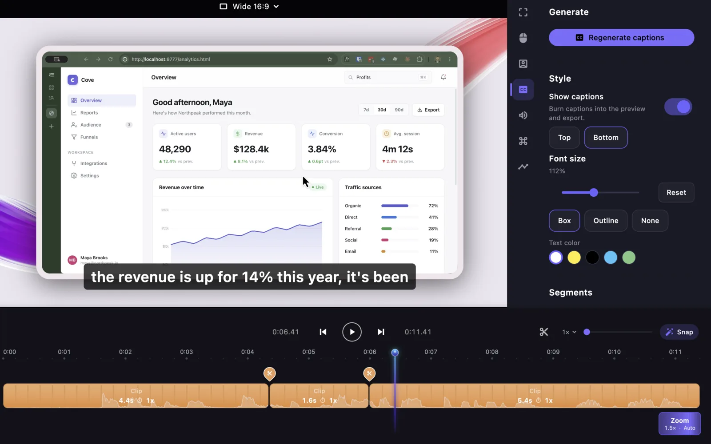
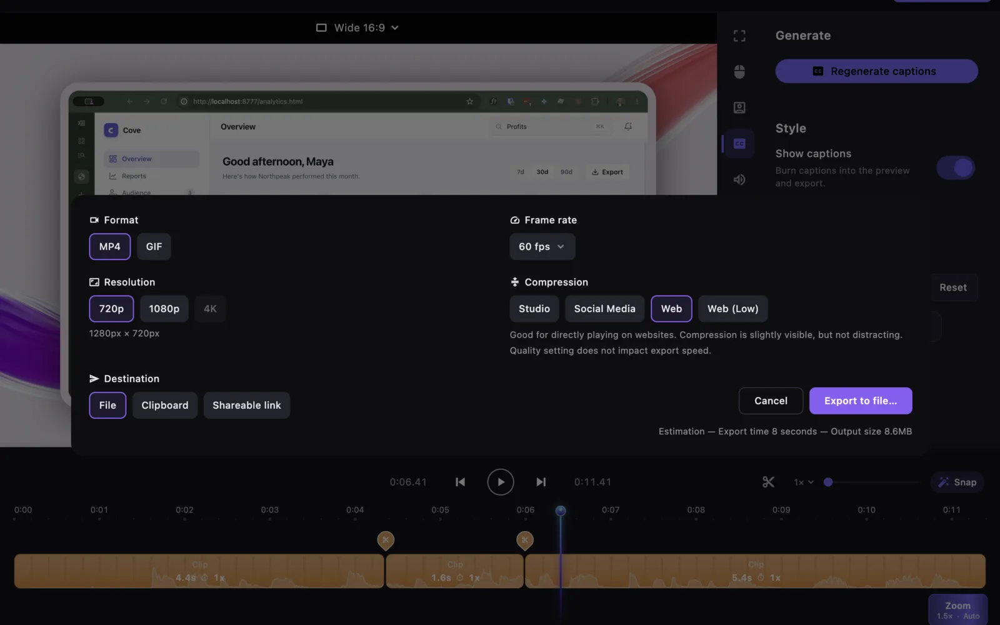

Zooms that write themselves
Slipreel finds every click and pushes in on it — anticipating where your cursor is heading, not chasing it. Adjust any zoom on the timeline, or add your own.
For macOS 13+ · Apple Silicon and Intel
Slipreel auto-zooms, smooths your cursor, frames your app, and captions it — the moment you stop recording.
Slipreel finds every click and pushes in on it — anticipating where your cursor is heading, not chasing it. Adjust any zoom on the timeline, or add your own.
Real cursors jitter. Slipreel smooths the path, adds motion blur, and highlights clicks — while keeping the timing honest, even through sped-up cuts.
Wrap your recording in a real Mac, iPhone, or iPad bezel, drop it on any background, and dial in padding, corners, and aspect ratio. What you preview is exactly what exports.
Slipreel records what you typed and renders it as an overlay on its own timeline lane — mute any keystroke you'd rather not show.
The transcription engine ships in the app; the speech model downloads once on first use, then stays cached. Your recording never leaves your Mac. Edit the text, burn it in on export.
Timeline
Split at the playhead with Cmd+K. Every slice keeps its own trim and speed, snapping to clicks and zoom edges as you cut. Waveforms render right in the slice.

Audio
Mic and system audio are captured as independent tracks. Set volume per track, mute either one, and Slipreel mixes them down on export.

Camera
Record your webcam alongside the screen as its own track, kept frame-accurate against the recording.

Export
The preview and the export run the same canvas math, so what you approve is what ships. Pick an aspect ratio and go.

Recommended
$129 once
$89/year
Prefer to try it first? Download Slipreel free — no account, no time limit.
Export unlocks instantly after checkout — your purchase activates on this Mac automatically, and you can sign in on a second device from your account page. The app is free to download and fully functional to record and edit before you buy; payment only unlocks export.
The app keeps working forever, and every version released in your first year stays yours. Updates after that are a separate, optional renewal.
macOS 13 or later, on Apple Silicon or Intel.
No. Recording, editing, captions, and export all run on your Mac. Slipreel has no account system and no server.
The Whisper transcription engine ships inside the app and runs on your Mac. The speech model itself is downloaded once on first use and cached; after that, captions work with no network at all, and your recording is never uploaded.
Slipreel is signed with an Apple Developer ID and notarized by Apple. Updates are cryptographically verified before they install.
Yes. Every auto-detected zoom is a normal timeline region you can move, resize, retime, or delete, and you can add your own.
Yes, as its own track, separate from the microphone, so you can mix them independently.
Email hello@slipreel.app within 14 days and you will get your money back.